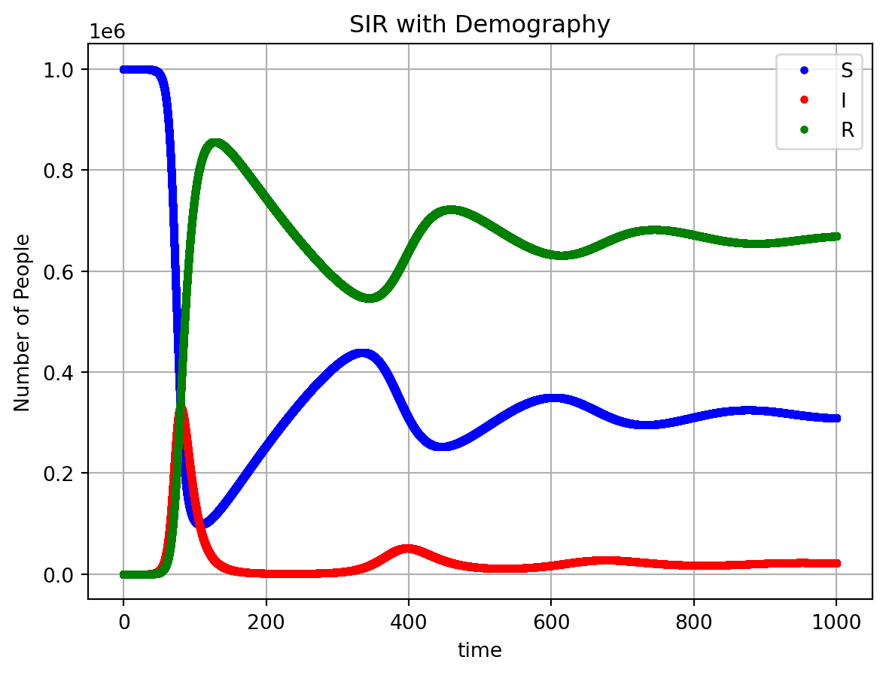
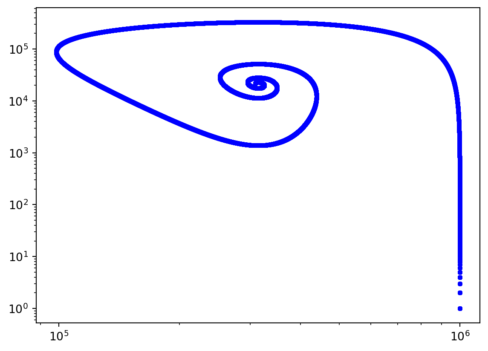

Code
import numpy as np
import matplotlib.pyplot as plt
from Solver2 import MovingFEMesh_cdsSimulator
# np.random.seed(3)
# These define the rates of the system
mBeta = 2/7 # Infect "___" people a week
mGamma = 0.61/7 # infecion for "___" weeks
mDeath = 1/(1*365) # lifespan
mBirth = mDeath
R_0 = mBeta/(mGamma+mDeath)
# These are the initial conditions
N0 = 10**5
I0 = 2
R0 = 0
S0 = N0-I0-R0
# How long to simulate for
tFinal = 100
# These are solver options
dt = 10**-3
SwitchingThreshold = np.array([0.2, 20])
# kinetic rate parameters
X0 = np.array([S0, I0, R0])
nu = np.array([[-1, 1, 0],
[0, -1, 1],
[1, 0, 0],
[-1, 0, 0],
[0, -1, 0],
[0, 0, -1]])
# propensity function
k = np.array([[mBeta, mGamma, mBirth, mDeath, mDeath, mDeath]]).T
def rates(X, t):
return k * np.array([[(X[0]*X[1])/(X[0]+X[1]+X[2]),
X[1],
X[0]+X[1]+X[2],
X[0],
X[1],
X[2]]]).T
# identify which reactions are discrete and which are continuous
# make sure that the shape of DoDisc is (3,1)
DoDisc = np.array([[0, 0, 0]]).T
# allow S and I to switch, but force R to be continuous
EnforceDo = np.array([[0, 0, 1]]).T
stoich = {'nu': nu, 'DoDisc': DoDisc}
solTimes = np.arange(0, tFinal+dt, dt)
myOpts = {'EnforceDo': EnforceDo, 'dt': dt, 'SwitchingThreshold': SwitchingThreshold}
X, TauArr = MovingFEMesh_cdsSimulator(X0, rates, stoich, solTimes, myOpts)
plt.plot(TauArr, X[0], label='S', marker='.', linestyle='', color='blue')
plt.plot(TauArr, X[1], label='I', marker='.', linestyle='', color='red')
plt.plot(TauArr, X[2], label='R', marker='.', linestyle='', color='green')
plt.xlabel('time')
plt.ylabel('Number of People')
plt.title('SIR with Demography')
plt.grid(True)
plt.legend() # Display legend
plt.show()
plt.plot(X[0],X[1], label='S', marker='.', linestyle='', color='blue')
plt.show()
